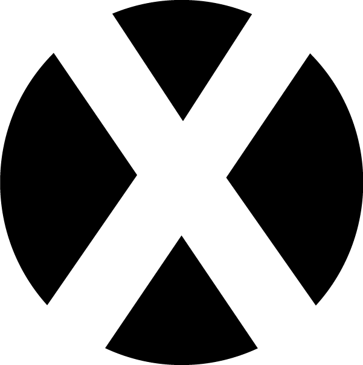

コレスポンデンス分析
コレスポンデンス分析は、アンケート調査などのクロス集計結果を散布図にして見やすくする手法です。
■テンプレを使った楽々モード
step1:テンプレを使ってアンケート
こちらの
テンプレート
を使ってアンケートを作成し、結果のエクセルをダウンロードします。
step2:クロス集計表を自動作成
step1でダウンロードしたアンケート結果のエクセルを
doyolabクロス集計アプリ を使ってクロス集計します。
結果のcsv(UTF-8)ファイルはcross.csvという名前でダウンロードされます。
step3:分析
■独自のアンケート形式で行う場合
データファイル作成
1.クロス集計表
エクセルを使って、アンケート結果を下図のようなクロス集計表にします。
集計値は平均値、カウントなどにしましょう
クロス集計表は下記のような形で空白列を作らないように作ってください。
また、データも空白のセルをつくらずに必ず値を入力してください。
2.csvファイル(UTF-8)で保存
クロス集計表をcsvファイル(UTF-8)形式で保存します。
UTF-8形式のcsvファイルの作成の方法は
こちら を参照してください。
神奈川大学の学生はOffice365を無料でダウンロードできます。詳しくは
ここを参照してください。
サンプルデータをダウンロードして、自分の集計結果を貼り付け上書き保存すると簡単です。
step3:分析
step3:分析